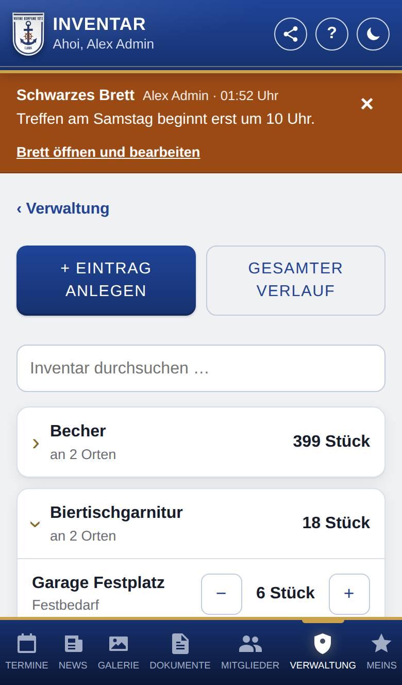
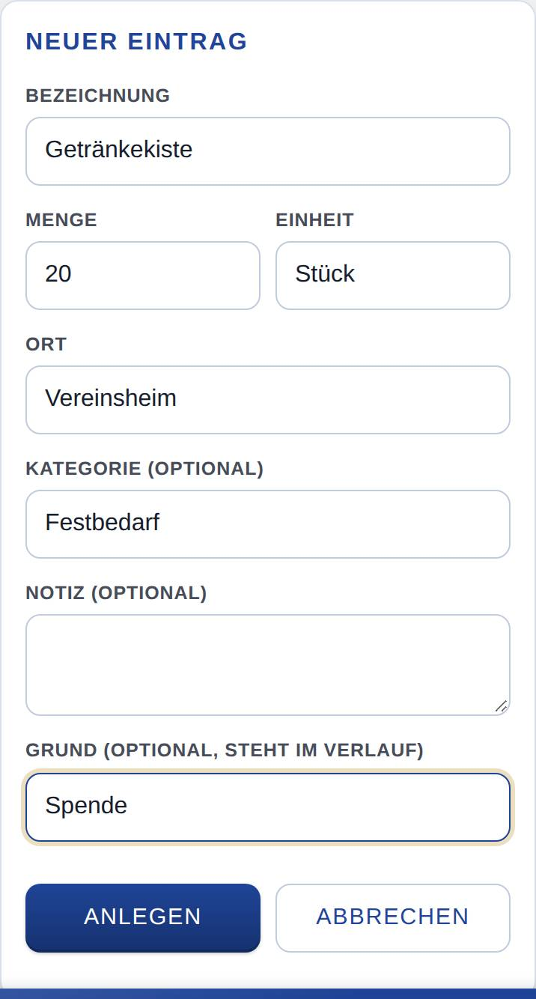
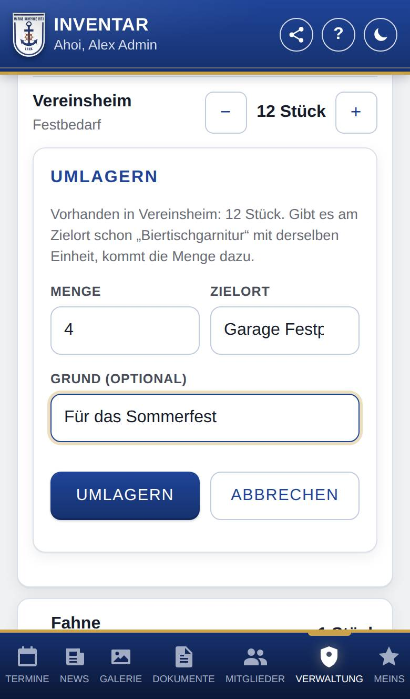

Inventar
Nur, wenn Inventar eingeschaltet ist.
Im Inventar hältst du fest, was die Kompanie besitzt, wie viel davon da ist und wo es liegt. Hier legst du Material an, änderst Mengen und lagerst es an einen anderen Ort um.

So öffnest du die Seite
Tippe unten auf Verwaltung und dann auf den Knopf Inventar. Gibt es in der Verwaltung nur diesen einen Knopf, öffnet sich das Inventar gleich.
Was du hier siehst
- + Eintrag anlegen: öffnet das Formular für neues Material.
- Gesamter Verlauf: zeigt alle Änderungen im Inventar (siehe Verlauf im Inventar).
- Inventar durchsuchen …: findet Material nach Bezeichnung, Ort, Kategorie oder Notiz. Bei einer Suche sind alle Treffer aufgeklappt.
- Die Liste: Jede Zeile ist ein Material mit der Summe über alle Orte, z. B. „18 Stück“. Darunter steht der Ort oder „an 2 Orten“. Gleiche Bezeichnungen gehören zusammen, auch in anderer Groß- und Kleinschreibung. Verschiedene Einheiten zählt die App nicht zusammen, sondern zeigt sie nebeneinander, z. B. „12 Stück · 3 kg“.
- Ein Material antippen: klappt es auf. Du siehst je Ort die Menge, die Kategorie und die Notiz.
- − und +: ändern die Menge an diesem Ort um 1.
- Umlagern, Bearbeiten, Verlauf, Löschen: Knöpfe für den Eintrag an diesem Ort.
So gehst du vor
Material anlegen
- Tippe auf + Eintrag anlegen.
- Trage die Bezeichnung und den Ort ein. Beides ist Pflicht.
- Trage die Menge ein. Leer gelassen gilt 0. Kommazahlen gehen auch, z. B. 2,5.
- Trage bei Bedarf Einheit (z. B. Stück, kg, m), Kategorie (optional) und Notiz (optional) ein.
- Schreibe bei Bedarf einen Grund dazu, z. B. „Spende“. Er steht im Verlauf.
- Tippe auf Anlegen.

Bei Ort, Einheit und Kategorie schlägt die App vor, was es schon gibt. Schreibst du einen bekannten Ort, eine Einheit oder eine Kategorie nur anders groß oder klein, übernimmt die App die bekannte Schreibweise.
Die Menge ändern
- Tippe auf das Material, um es aufzuklappen.
- Tippe beim richtigen Ort auf − oder +.
Für größere Änderungen tippst du auf Bearbeiten, trägst die neue Menge ein, schreibst bei Bedarf einen Grund dazu (z. B. „Inventur“) und tippst auf Speichern.
Material umlagern
- Klappe das Material auf und tippe beim Ort, von dem es weggeht, auf Umlagern.
- Trage die Menge ein. Vorgegeben ist alles, was dort liegt.
- Trage den Zielort ein.
- Schreibe bei Bedarf einen Grund (optional) dazu.
- Tippe auf Umlagern.

Einen Eintrag löschen
- Klappe das Material auf und tippe beim Ort auf Löschen.
- Die App fragt nach einem Grund. Du kannst ihn leer lassen.
- Bestätige mit OK.
Gut zu wissen
- Ein Eintrag hat genau einen Ort. Liegt dasselbe Material an zwei Orten, sind das zwei Einträge.
- Die Menge ist 0 oder mehr, mit höchstens drei Nachkommastellen. Unter 0 geht es nicht; ist weniger als 1 da, ist − gesperrt.
- Beim Umlagern: Gibt es am Zielort schon dasselbe Material mit derselben Einheit, kommt die Menge dort dazu. Sonst entsteht am Zielort ein neuer Eintrag.
- Lagerst du alles um, verschwindet der Eintrag am alten Ort. Gibt es am Ziel noch nichts davon, ändert sich nur sein Ort.
- Mehr umlagern, als da ist, geht nicht. Der Zielort muss ein anderer sein. Die App meldet das, und nichts ändert sich.
- Änderst du unter Bearbeiten den Ort, berichtigst du nur die Angabe. Mit gleichem Material am neuen Ort wird dabei nichts zusammengelegt; dafür nimmst du Umlagern.
- Jede Änderung steht im Verlauf, auch bei gelöschten Einträgen.
- Das Inventar sehen nur Personen, die es pflegen dürfen. Andere Mitglied sehen es nicht.